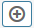
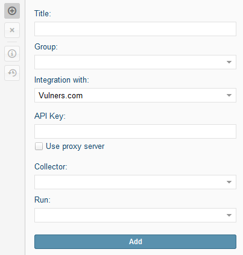

Integration with the Vulners.com database
To configure integration with the Vulners.com vulnerability database, perform the following settings:
Go to Settings → Asset Management → External Systems.
Press the  button. The editing area is displayed.

In the Integration with field select Vulners.com - Public Vulnerability Database.
If you use a proxy server to connect to Vulners.com, specify the following proxy server settings: IP address, port, login and password.
Specify the company ID (if two or more companies are present in the system).
Specify the collector used to collect the data.
Specify the integration schedule for updating data (start time and repetition intervals).
Сlick the Add button.
After the integration is added, the local copy of the Vulners database (of September 2016) is launched. It may take 5-7 hours, depending on the availability of resources for the system. After that, run the integration for the first time. At this point, the delta database will be loaded from the site http://vulners.com/ (via HTTP) at the current date and time when the integration was started. Immediately thereafter, all data received as a result of the software inventory will be mapped to the local copy of the Vulners.com database, and the detected vulnerabilities will be displayed.
System displays only software vulnerabilities. If the system does not initially access the http://vulners.com/, the vulnerability will not be displayed. If, as a result of managing the vulnerabilities, the software on the nodes is updated and inspected by the Defensys system, the vulnerabilities that were found earlier will be closed.
Currently, vulnerabilities are imported from the following Vulners.com databases: 'cve', 'redhat' 'debian' 'ubuntu' 'freebsd' 'symantec' 'suse' 'oraclelinux' 'centos'' mozilla ',' archlinux '' xen '' openssl "wpvulndb samba postgresql drupal msvr nginx appercut. In the process of parsing the Vulners.com databases, only those vulnerability bulletins that indicate the relevant software version are imported. Only the database difference between the current date and the date of the previous scan is downloaded.
The Defensys severity level is compared with the CVSS vulnerability as follows: critical 9-10, high 7-9, medium 5-7, low 3-5, information 0-3.